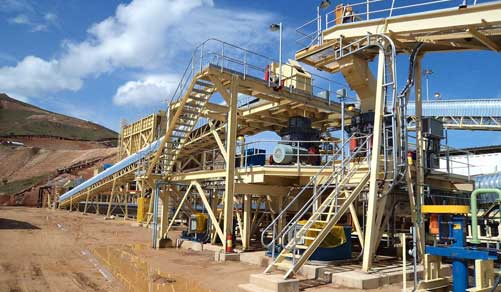

- The spindle bearing is improved, replacing the original sliding bearing. This will reduce friction, and energy consumption. It is easy to start the mill.
- Retain the ordinary grinder's end cap structure, with large caliber inlet and outlet, and large processing quantity.
- The structure of feeder is simple and split installation.
- The operation of equipment is smooth, and reduces the downtime parking repair time, improving the production efficiency.
- The capacity and fineness can be adjusted by adjusting the diameter of the ball.
- The shape of final product is uniform, and most of them are round.
| Model | Rotate Speed (r/min) | Grinding Media Weight (T) | Max.Feeding Size(mm) | Discharge Size (mm) | Output(t/h) | Motor Power (KW) |
| Ф900×1800 | 36～38 | 1.5 | ≤20 | 0.075-0.89 | 0.65-2 | 18.5 |
| Ф900×3000 | 36 | 2.7 | ≤20 | 0.075-0.89 | 1.1-3.5 | 22 |
| Ф1200×2400 | 36 | 3 | ≤25 | 0.075-0.6 | 1.5-4.8 | 30 |
| Ф1200×3000 | 36 | 3.5 | ≤25 | 0.074-0.4 | 1.6-5 | 37 |
| Ф1200×4500 | 32.4 | 5 | ≤25 | 0.074-0.4 | 1.6-5.8 | 55 |
| Ф1500×3000 | 29.7 | 7.5 | ≤25 | 0.074-0.4 | 2-5 | 75 |
| Ф1500×4500 | 27 | 11 | ≤25 | 0.074-0.4 | 3-6 | 110 |
| Ф1500×5700 | 28 | 12 | ≤25 | 0.074-0.4 | 3.5-6 | 130 |
| Ф1830×3000 | 25.4 | 11 | ≤25 | 0.074-0.4 | 4-10 | 130 |
| Ф1830×4500 | 25.4 | 15 | ≤25 | 0.074-0.4 | 4.5-12 | 155 |
| Ф1830×6400 | 24.1 | 21 | ≤25 | 0.074-0.4 | 6.5-15 | 210 |
| Ф1830×7000 | 24.1 | 23 | ≤25 | 0.074-0.4 | 7.5-17 | 245 |
| Ф2100×3000 | 23.7 | 15 | ≤25 | 0.074-0.4 | 6.5-36 | 155 |
| Ф2100×4500 | 23.7 | 24 | ≤25 | 0.074-0.4 | 8-43 | 245 |
| Ф2100×7000 | 23.7 | 26 | ≤25 | 0.074-0.4 | 8-48 | 280 |
| Ф2200×4500 | 21.5 | 27 | ≤25 | 0.074-0.4 | 9-45 | 280 |
| Ф2200×6500 | 21.7 | 35 | ≤25 | 0.074-0.4 | 14-26 | 380 |
| Ф2200×7000 | 21.7 | 35 | ≤25 | 0.074-0.4 | 15-28 | 380 |
| Ф2200×7500 | 21.7 | 35 | ≤25 | 0.074-0.4 | 15-30 | 380 |
| Ф2400×3000 | 21 | 23 | ≤25 | 0.074-0.4 | 7-50 | 245 |
| Ф2400×4500 | 21 | 30 | ≤25 | 0.074-0.4 | 8.5-60 | 320 |
| Ф2700×4000 | 20.7 | 40 | ≤25 | 0.074-0.4 | 12-80 | 400 |
| Ф2700×4500 | 20.7 | 48 | ≤25 | 0.074-0.4 | 12-90 | 430 |
| Ф3200×4500 | 18 | 65 | ≤25 | 0.074-0.4 | According to the process condition | 800 |
The ball mill is key equipment in grinding industry, especially in mineral ore dressing plants. It is widely used for the cement, the silicate product, new type building material, fire-proof material, chemical fertilizer, black and non-ferrous metal, glass, ceramics and etc.
Supply the most current design and technical expertise;Supply parts sales and training service far beyond the initial sale;Your profits with quality parts and expert service.
Working Principle:

1) This crusher uses motor as its power. Through the motor's wheels, the eccentric shaft is driven by the belt and the belt wheel to make the jawstock move by a regulated track.
2)The angle between the toggie plate and jawstock will become large as the up of the jawstock. This will push the moveable jaw plate towards the fixed jaw plate,which can realize the multi-crushing of the materials.
3)The angle between the toggie plate and jawstock will become small as the down of the jawstock. The moveable jaw plate will leave the jaw plate at the presure of the tension rod and spring ,meanwhile ,the final products will be discharged from the dischargeing opening.